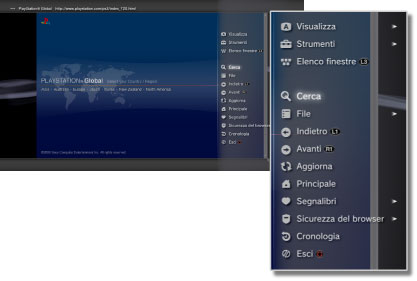

Rete > Funzionamento di base del browser per Internet
Funzionamento di base del browser per Internet
Visualizzazione della schermata

(1) |
Titolo della pagina |
|---|---|
(2) |
Indirizzo della pagina |
(3) |
Icona SSL |
(4) |
Icona Occupato |
(5) |
Icona Sicurezza del browser |
(6) |
Indirizzo del collegamento |
(7) |
Puntatore |
Metodi di scorrimento
| Tasti direzionali | Spostano il puntatore a un collegamento. |
|---|---|
Tasto  + tasto direzionale + tasto direzionale |
Scorrono per pagina. |
| Levetta destra | Scorre nella direzione desiderata. |
Utilizzo del menu
Premere il tasto  per visualizzare il menu che consente di eseguire varie operazioni e impostazioni. Il menu può essere visualizzato o nascosto premendo il tasto . Le voci di menu sono diverse nella modalità browse e nella modalità finestra.
per visualizzare il menu che consente di eseguire varie operazioni e impostazioni. Il menu può essere visualizzato o nascosto premendo il tasto . Le voci di menu sono diverse nella modalità browse e nella modalità finestra.

Inserire un indirizzo (URL)
Quando si preme il tasto START, viene visualizzata una tastiera in modo da poter inserire un indirizzo. Se si seleziona  dopo aver inserito un indirizzo, la tastiera scompare e si apre la pagina con l'indirizzo inserito.
dopo aver inserito un indirizzo, la tastiera scompare e si apre la pagina con l'indirizzo inserito.
Copia di un testo
È possibile copiare un testo da una pagina del browser per Internet.
1. |
Utilizzare la levetta sinistra per spostare il puntatore nella posizione del testo che si desidera copiare, quindi premere il tasto |
|---|---|
2. |
Tenere premuto il tasto |
3. |
Rilasciare il tasto |
4. |
Selezionare [Copia] nel menu visualizzato. |
Note
- È possibile incollare il testo copiato utilizzando il tasto [Incolla] della tastiera a schermo.
- Se al passo 4 viene selezionato [Cerca], è possibile eseguire una ricerca su Internet utilizzando il testo copiato come parola chiave.
Stampare una pagina Web
Per utilizzare questa funzione, è necessario configurare una stampante selezionando  (Impostazioni) > [Impostazioni della stampante] > [Selezione stampante].
(Impostazioni) > [Impostazioni della stampante] > [Selezione stampante].
1. |
Aprire la pagina Web che si desidera stampare, quindi premere il tasto |
|---|---|
2. |
Selezionare [File] > [Stampa questa schermata]. |
3. |
Controllare le impostazioni di stampa. |
4. |
Selezionare [Stampa]. |
Nota
Le stampanti utilizzabili dipendono dal paese o dalla zona di residenza. Per ulteriori informazioni, visitare il sito Web di SCE per la propria regione.
Apertura di finestre multiple
È possibile aprire contemporaneamente più finestre. Con il puntatore posizionato sul collegamento, premere il tasto  senza rilasciarlo finché il collegamento si apre in una finestra diversa.
senza rilasciarlo finché il collegamento si apre in una finestra diversa.